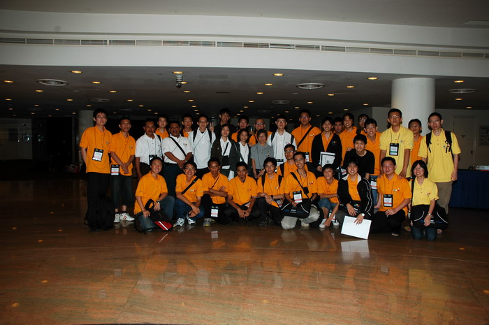

TOKIERS 020606 in Action!
This is the first time NUS (National University of Singapore) host an ACM ICPC Regional. Singapore is a very strategic place for Asian teams because of free VISA (for ASEAN) and many direct planes to Singapore are available. This attracted many great teams all over Asia to join regional Singapore which made Regional Singapore one of the toughest Regional in Asia. The surprise prize for the champion team of this regional is 3 Lenovo (each worth around 3000 SGD)! This is a very attractive prize!! I'm sure the next 4 years (when NUS host the ACM ICPC Regional again), there'll be even more teams join Regional Singapore merely to get the prizes.
This time I represent NUS instead of BINUS UNIVERSITY. My team name is TOKIERS 020606 which consist of 3 TOKI (Tim Olimpiade Komputer Indonesia) members:
Left to Right: Aditya KG, Daniel APP, and Felix Halim
My brother, Steven Halim, is one of the Registration committee for this event. He is the one who gave you the ICPC Bag, T-Shirt, Name Tag, etc. So I think every team should've met my brother :). Since NUS were short in number of committee, the Registration committees ended up being "any" committee which took care of almost anything :(. They worked really hard to make this event sucessful. Thanks to them.
After registration, the 47 teams (except JiLin University who didn't manage to come due to VISA problem) went to the practice room. A bottleneck happened during the move so the practice session was delayed a bit. In this practice session, there were 3 easy problems given. However the last one is troublesome. My team and several other teams didn't manage to get it Accepted! The reason is the scanf problem. Those who used scanf("%d\n",&n) to read the number of testcases will never get this problem Accepted. Examine a C code below:
#include <stdio.h>
char s[1000];
int n;
int main(){
scanf("%d\n",&n);
for (int i=0; i<n; i++){
gets(s);
// process s here...
puts(s);
}
}
If the input is something like:
3 felix halimThen the output is surprisingly wrong:
felix halim halimThe "\n" in scanf actually read two new lines! This is something unexpected. This is a lesson to never use scanf("%d\n", ...) if the input can be a blank line! There are several teams got trapped with this kind of thing including mine. Other than this issue, the rest of the practice session went smoothly.
The contest starts at 8:30am and ends at 1:30pm. I got there Just in TimeTM :D to give a little excitement to the other teams. They thought I wouldn't come because probably I joined the last night SRM and was too tired to get up in the morning but then I dissapointed them by showing my face, hihihi. Whereas the fact is: I woke up late :P, causing panic to my own team :P (sori Daniel, Aditya)
Then the contest starts. As usual, I coded the template REP, FOR, using std, etc... just like TopCoder style (see my code below). Then the fun begins! The 7 problem statements of this regional contest can be found here.
When I started reading, Aditya KG asked me if I know something about big-mod and pointed me to Problem A. With years of experience, looking at the big-mod was like going back to childhood :P. With no further ado, I coded and submit it. It's not a surprise that the other teams also get this problem accepted very quick.
The problem asked to compute x^y mod n. Where y can be as large as 2^31 - 1.
The must-know-rule of big mod is: (a*b) mod c is equal to ((a mod c) * (b mod c)) mod c.
The solution is to divide the y into two until it reaches the base case of y = 0. Then
construct the solution based on the result of the smaller y. The dynamic programming goes like this:
x^y mod n is equal to
#include <stdio.h>
int pow(int x, int y, int n){
if (y==0) return 1;
int t = pow(x,y/2,n);
if (y%2==0) return (t*t) % n;
return (((t*t)%n) * x) % n;
}
int main(){
int nTC, x,y,n;
scanf("%d",&nTC);
while (nTC--){
scanf("%d %d %d",&x,&y,&n);
printf("%d\n",pow(x,y,n));
}
}
What's intriguing about this problem is that, if you use Java, you can just use the BigInteger class! (Randy Sugianto told me this)
import java.util.*;
import java.math.*;
import java.io.*;
public class A {
public static void main(String[] args) throws IOException {
Scanner scan = new Scanner(System.in);
int nTC = scan.nextInt();
while (nTC-- > 0){
BigInteger x = BigInteger.valueOf(scan.nextInt());
BigInteger y = BigInteger.valueOf(scan.nextInt());
BigInteger n = BigInteger.valueOf(scan.nextInt());
BigInteger z = x.modPow(y,n); // look ma, it's in the library ;)
System.out.println( z );
}
}
}
Problem A was supposed to be a super bonus problem.
Another DP (Dynamic Programming) problem. Hmm... It's really strange that this kind of problem is now becomes not interesting anymore. In early days when I was just starting to learn programming, I always thought that Dynamic Programming problems are hard, but nowdays these kind of problem starts to lose it's value. It's already becomes an easy-standard problems. Once you know the trick, the rest is just coding skills.
As we all know we have two ways to do DP: bottom-up and top-down. The bottom-up DP can save memory and more efficient but the code is not intuitive sometimes. The top-down DP is very easy to code (intuitive) but takes up more memory and run time. The code for both kinds of DP is presented below.
The problem is like this: There are t trees with the same height h. There are acorns distributed in different heights of any tree. A squirrel is currently at the top of a tree and want to go down and collect as many acorns as possible. The squirrel can choose to go down one step from height x to height x-1 or it can choose to fly to another tree from height x to height x-f (f is given). The question is what is the maximum number of acorns the squirrel can collect?
This is the bottom-up DP version:
#include <stdio.h>
#include <string.h>
#define REP(i,n) for (int i=0,_n=(n); i<_n; i++)
#define FORD(i,a,b) for (int i=(a),_b=(b); i>=_b; i--)
#define MAXN 2007
int dp[MAXN];
int tree[MAXN][MAXN];
int t,h,f,a,n,nTC;
int main(){
scanf("%d",&nTC);
while(nTC--){
memset(dp,0,sizeof(dp));
memset(tree,0,sizeof(tree));
scanf("%d %d %d",&t,&h,&f);
REP(i,t){
scanf("%d",&a);
REP(j,a){
scanf("%d",&n);
tree[i][n]++;
}
}
FORD(i,h,1) REP(j,t){
int best = tree[j][i+1]; // don't jump
best >?= dp[i+f]; // jump
best += tree[j][i]; // add current
tree[j][i] = best; // update
dp[i] >?= best; // update
}
printf("%d\n",dp[1]);
}
}
This is the top-down DP version:
#include <stdio.h>
#include <string.h>
#define REP(i,n) for (int i=0,_n=(n); i<_n; i++)
#define MAXN 2001
int memo[MAXN][MAXN];
int tree[MAXN][MAXN];
int t,h,f,a,n,nTC;
int rec(int hi, int ti){
if (hi>=h) return 0;
int &ret = memo[hi][ti];
if (ret!=-1) return ret;
ret = tree[ti][hi] + rec(hi+1,ti); // don't jump
REP(i,t) ret >?= tree[ti][hi] + rec(hi+f, i); // jump
return ret;
}
int main(){
scanf("%d",&nTC);
while(nTC--){
memset(memo,-1,sizeof(memo));
memset(tree,0,sizeof(tree));
scanf("%d %d %d",&t,&h,&f);
REP(i,t){
scanf("%d",&a);
REP(j,a){
scanf("%d",&n);
tree[i][n-1]++;
}
}
int res = 0;
REP(i,t) res >?= rec(0,i);
printf("%d\n",res);
}
}
Daniel coded this problem using bottom-up dynamic programming and got it accepted in the first try.
IIRC, Aditya KG was doing problem F and I was doing problem G while Daniel was looking for another problem. The ranklist at this time is not good :( Our team solved 2 problems while more than ten other teams solved 3+ problems. What made me hot was that YoiMon was above us! This team should not be allowed to go any further!! :P
Problem G was also a typical problem: given a simple graph, you must select and remove a set of edges from the graph such that the graph has no cycle in it and the total weight of the removed edges is minimum. I thought problem G can be solved using greedy by finding the smallest edge (smallest weight) and check whether it is possible to create a cycle using that edge (using DFS). If can then I can just remove that edge and find the second smallest edge and so on. When I submit it, I got Wrong Answer. I was quite sure that this should work. Many teams already got this problem accepted, I was quite frustrated and decided to try the other problem.
Then Aditya KG took over the keyboard to code problem F while I'm hunting for another problem. Problem B (Jones) got my attention. By this time, Aditya KG had submit problem F several times but keep getting Wrong Answer.
Problem B is about Indiana Jones want to cross a river by hopping through stones. Each stones can sink at certain interval and can resurface in another interval or stand still. The exact interval of the sink/resurface is given. The question is what is the earliest time Indiana Jones can reach the other side of the river by jumping through these "magic" stones.
Problem B seemed too simple at the beginning and I was underestimating the problem. I thought the solution was just a simple DP (again): The Indiana Jones can jump forward to the next stone anytime he can or wait for the next stone to resurface (if it's currently sinking) and choose the best outcome. I robbed the keyboard and coded simple top-down DP "in no time" and then submit it (when I said "in no time", it actually consumes about 5 to 15 minutes :P). Then gave the keyboard back to Aditya KG as if Problem B already accepted, hehe :P.
To my surprise, my solution for problem B got Wrong Answer. I was too confident. When I printed the code, I realized that my code is totaly wrong: the variable name was switched (doh!). I fixed it and resubmit. Those of you who know the solution should know already that this submission will also get Wrong Answer. My algorithm was missing something important. That is: Indiana Jones can also jump back to the previous stones besides waiting or jumping forward. Realizing this mistake, I slipped in a few lines of code to the top-down DP to allow Indiana Jones to jump backward, and resubmit. At this time, the code was having too many patches and got Wrong Answer again :(. During this time, I bothered Aditya KG several times when he coded problem F. Maybe this is the reason he couldn't get problem F accepted :D, sorry Aditya. I calmed myself, and start to simplify Problem B code, resubmit and got it accepted at last. This is the code:
#include <stdio.h>
#include <string.h>
#define REP(i,n) for (int i=0,_n=(n); i<_n; i++)
#define FOR(i,a,b) for (int i=(a),_b=(b); i<=_b; i++)
int nTC,s,t;
char con[550][550], temp[10];
int memo[550][550];
int rec(int time, int idx){
if (idx==s) return time;
if (time>=t) return 1000;
int &ret = memo[time][idx];
if (ret!=-1) return ret; else ret = 1000;
if (con[time][idx]==0) return ret;
FOR(i,time,t-1){
if (con[i][idx]==0) break;
if (con[i][idx+1]) ret <?= rec(i+1, idx+1);
if (idx>0 && con[i][idx-1]) ret <?= rec(i+1, idx-1);
}
return ret;
}
int main(){
scanf("%d",&nTC);
while (nTC--){
scanf("%d %d",&s,&t);
memset(con,0,sizeof(con));
REP(i,t){
REP(j,s){
scanf("%s",temp);
con[i][j] = temp[0];
}
con[i][s] = 1;
}
REP(i,s){
int c = 1;
REP(j,t){
if (con[j][i]=='u'){
con[j][i] = c;
} else if (con[j][i]=='r'){
con[j][i] = c = 1;
} else {
con[j][i] = c = 0;
}
}
}
con[t][s] = 1;
memset(memo,-1,sizeof(memo));
int res = 1000;
REP(i,t-1) if (con[i][0]) res <?= rec(i+1,0);
if (res>=1000) puts("-1");
else printf("%d\n",res);
}
}
The ranklist at this point was also not good, no need to tell the details (I'm embarrassed :P). Feeling guilty to Aditya which keyboard got robbed by me several times, I decided to rob his problem as well (how cruel me!!) since I didn't have clue for other problems yet. I asked Daniel to re-explain the problem F again. He explained to me: There is a box which can be inserted up to certain amount of dollar coins in it. This box is passed from the usher to several parishioners and the parishioners can add certain amout of dollar in it and pass it back to usher or other parishioners and so on. The box passing stops when the box is full of coins. Every time the usher get the box, he will remove one coin, add it to his pocket and the passing continues. Usher never add coin to the box. The question is what is the maximum number of coins the usher can get?
Floyd Warshall algorithm immediatelly popped out from my mind (FYI, it's another DP algorithm). That is, just find the minimum cost cycle from usher to parishoioners and back to the usher again. The result is the box capacity divided by the cycle cost. I immediatelly coded it "in no time" again and submit it. I had a feeling that simple division wouldn't work but Daniel was fine-fine aja with that so I submit it anyway. It's my fault that I didn't tell Daniel my doubt :(. After got Wrong Answer, Daniel then remembered that he forgot to tell me that after dividing the box capacity with the shortest cycle length (or cost), we need to calculate again the possibility of having more cycle (because the usher removed a coin). Thus, the usher may end up having more coins. Aditya KG already have the formula to calculate this, I can just use his, resubmit and got it accepted. It was just a slight error, anyway, good work Aditya and Daniel. Below is our code for problem F:
#include <stdio.h>
#include <string.h>
#define REP(i,n) for (int i=0,_n=(n); i<_n; i++)
#define FOR(i,a,b) for (int i=(a),_b=(b); i<=_b; i++)
int nTC, cost, n, box, con[510][510], nr, a,b;
int main(){
scanf("%d",&nTC);
while (nTC--){
scanf("%d %d",&box,&n); n++;
memset(con,-1,sizeof(con));
scanf("%d",&nr);
REP(i,nr){
scanf("%d",&b);
con[0][b] = 0;
}
FOR(i,1,n-1){
scanf("%d",&nr);
REP(j,nr){
scanf("%d %d",&a,&b);
if (con[i][b]==-1 || a<con[i][b]) con[i][b] = a;
}
}
// Floyd Warshall
REP(k,n) REP(i,n) if (con[i][k]!=-1)
REP(j,n) if (con[k][j]!=-1){
if (con[i][j]==-1 || con[i][j] > con[i][k] + con[k][j])
con[i][j] = con[i][k] + con[k][j];
}
int cycleLen = 1000000000;
FOR(i,1,n-1) if (con[0][i]!=-1 && con[i][0]!=-1)
cycleLen <?= con[0][i] + con[i][0];
// Aditya KG's formula
cycleLen--;
int tot = box/cycleLen;
while ((tot*cycleLen) + cycleLen+1 >= box) tot--;
printf("%d\n",tot+1);
}
}
This time, our team was still below YoiMon but we have the same number of solved problems :). However the rank was still bad enough, we need to solve more problems to get to the top 10.
Fortunately, out of the blue, Daniel mentioned something about Minimum Spanning Tree for problem G. When I think about it again, the algorithm seemed fit to the problem! Since we need to remove the cycles from the graph by removing edges, this description is like creating a tree. When I think about what the tree should look like, it "clicks" with the Maximum Spanning Tree. Knowing this, coded problem G, again, "in no time", submit it and got it accepted, Yatta!! At least there wass some period of time where TOKIERS 020606 managed to surpass YoiMon :D Below is our code for problem G:
#include <stdio.h>
#include <string.h>
#include <vector>
#include <algorithm>
using namespace std;
#define REP(i,n) for (int i=0,_n=(n); i<_n; i++)
#define FOR(i,a,b) for (int i=(a),_b=(b); i<=_b; i++)
#define MAXN 10010
// Union-Set algorithm
int pset[MAXN];
void initset(){ REP(i,MAXN) pset[i] = i; }
int findSet(int i){ return (pset[i]==i)? i: (pset[i] = findSet(pset[i])); }
void merge(int i, int j){ pset[findSet(i)] = findSet(j); }
int sameSet(int i, int j){ return findSet(i)==findSet(j); }
int nTC,n,m;
char vis[MAXN];
int main(){
scanf("%d",&nTC);
while (nTC--){
scanf("%d %d",&n,&m);
vector<pair<int,pair<int,int> > > junc;
REP(i,m){
int a,b,c;
scanf("%d %d %d",&a,&b,&c); a--; b--;
junc.push_back(make_pair(c,make_pair(a,b)));
}
// sort edges descending by weight
sort(junc.rbegin(), junc.rend());
// Maximum Spanning Tree
memset(vis,0,sizeof(vis));
initset();
int res = 0;
REP(i,junc.size()){
int a = junc[i].second.first;
int b = junc[i].second.second;
int c = junc[i].first;
if (sameSet(a,b)) res += c;
else merge(a,b);
}
printf("%d\n",res);
}
}
I already found the algorithm for problem D which runs in O(n^2 log n) also problem E which is kind of gambling (unsure if my algo will pass the time limit). The remaining time is about 1 hour and 20 minutes, I decided to go with problem D and told Aditya and Daniel to think of faster algorithm for problem E.
It turned out to be a bad idea, problem D is quite hard to implement and I got bugs in the code I couldn't find :(, now it's 30 minutes left, the ranklist was freezed. This was really a problematic situation. If I recoded problem D, it won't finish in time. Aditya and Daniel couldn't find faster algorithm for problem E either. So I focused on problem D but still didn't managed to pass the sample case :(. I guess this is the end of our strength.
TOKIERS 020606 in Action!
Many teams asked me what's wrong with their solution for Problem B. Why they got so many Wrong Answers. They asked me what was the tricky case? I was surprised since I didn't find any tricky case for Problem B. I got WA previously because my algo and code was wrong and there were so many changes before I got it accepted. So I couldn't remember which one I changed to make it accepted. When I looked at the standings, the top teams also didn't manage to get it accepted and there were exceptionaly so many Wrong Answers on problem B! I suspect there is something fishy about this problem. Maybe there is an unwritten boundary case? But why some of the team got it accepted? The judges at that time concluded that the judge output was correct. Nobody could figure out what's wrong with Problem B.
After having lunch and city tour in the afternoon, the award ceremony begins. Only the top 5 teams got awards. The award ceremony was merged with the other three SoC competitions. This made ACM ICPC Singapore looked a lot less prestigious (seemed only a small part of SoC event). It was funny to see high-schoolers and middle-schoolers came up from nowhere, got awarded then paired with the champion team of ACM ICPC. We were totaly un-aware of those competitions and it felt awkward. Anyway, below is the official standings. The light-green-ed teams contain Indonesian contestants.
| Rank | University Name | Team Name | Citation | # Solved | Time |
|---|---|---|---|---|---|
| 1 | Shanghai Jiao Tong University | Prime | First Place | 7 | 569 |
| 2 | Zhejiang University | Othello | Second Place | 7 | 641 |
| 3 | Shanghai Jiao Tong University | Sofasquad | Third Place | 6 | 470 |
| 3 | Peking University | Excalibur | Third Place | 6 | 603 |
| 4 | Zhongshan(Sun Yat-sen) University | ZSU_Phecda | Fourth Place | 6 | 650 |
| 5 | Fudan University | Metaphor | Fifth Place | 6 | 757 |
| 5 | BINUS UNIVERSITY | YoiMon | Fitth Place | 6 | 765 |
| 5 | National Tsing Hua University | B.F.W | Fifth Place | 6 | 1044 |
| 8 | Nanyang Technological University | NTU Ivory Gull | Eighth Place | 5 | 328 |
| 8 | Taiwan University | rand N-SAT | Eighth Place | 5 | 379 |
| 8 | Nanyang Technological University | Nanyang Eagles | Eighth Place | 5 | 607 |
| 8 | National University of Singapore | TOKIERS 020606 | Eighth Place | 5 | 812 |
| 9 | Institut Teknologi Bandung | Ganesha ITB | Ninth Place | 5 | 813 |
| 9 | University of the Philippines Diliman | UP Fighting Morons | Ninth Place | 5 | 854 |
| 9 | Shanghai University | Larva | Ninth Place | 5 | 871 |
| 10 | Saitama University | Maximum-Coffee | Tenth Place | 5 | 925 |
| 10 | Saitama University | Maximum_TGM | Tenth Place | 5 | 934 |
| 11 | National University of Singapore | 12TIN@NUS | Eleventh Place | 5 | 1046 |
| 13 | National University of Singapore | eagle | Thirteenth Place | 4 | 382 |
| 14 | National University of Singapore | Code Warrior | Fourteenth Place | 4 | 488 |
| 14 | Nanyang Technological University | KhAN | Fourteenth Place | 4 | 664 |
| 15 | Nanyang Technological University | Y2F | Fifteenth Place | 4 | 718 |
| 15 | National University of Singapore | NUSSOC | Fifteenth Place | 4 | 719 |
| 15 | Nanyang Technological University | GeJe | Fifteenth Place | 4 | 778 |
| 15 | BINUS UNIVERSITY | ACMon | Fifteenth Place | 4 | 847 |
| 15 | City University of Hong Kong | 9.99 Accepted | Fifteenth Place | 3 | 219 |
| 15 | Nanyang Technological University | HiWorld | Fifteenth Place | 3 | 234 |
| 15 | National Tsing Hua University | ROH | Fifteenth Place | 3 | 369 |
| 15 | Kasetsart University, Thailand | T2B | Fifteenth Place | 3 | 385 |
| 16 | Nanyang Technological University | TMNQ | Sixteenth Place | 3 | 393 |
| 16 | International Islamic University Malaysia | Al-Khawarizmi | Sixteenth Place | 3 | 440 |
| 16 | Parahyangan University | H&&H | Sixteenth Place | 3 | 495 |
| 17 | Soongsil University | Inspirations | Seventeenth Place | 3 | 525 |
| 18 | Universitas Indonesia | Makara | Eighteenth Place | 3 | 532 |
| 21 | University of Sumatera Utara | USU - The Last One | Twenty-first Place | 2 | 84 |
| 22 | National Chiao Tung University | Freshfox | Twenty-second Place | 2 | 168 |
| 23 | Parahyangan University | KiWiChan | Twenty-third Place | 2 | 307 |
| Ateneo de Manila University | cxxC | Honorable Mention | |||
| Informatics Education | Polymorphic | Honorable Mention | |||
| University of Sumatera Utara | USU - The Last Two | Honorable Mention | |||
| National University of Singapore | Coding Bunnies | Honorable Mention | |||
| Soongsil University | NewFace | Honorable Mention | |||
| Multimedia University, Malaysia | ! | Honorable Mention | |||
| Nanyang Technological University | CODE BREAKERS | Honorable Mention | |||
| Multimedia University, Malaysia | Infinity | Honorable Mention | |||
| Prince of Songkla University | PSU-PKT | Honorable Mention | |||
| Sekolah Tinggi Teknologi Telkom | STT01 | Honorable Mention |
The judge reference solution was wrong. The reference solution assumed that Indiana Jones cannot jump at Interval 0 (zero). Thus for a certain testcase which has a possible path using Interval 0 (zero), the reference solution won't select that path. The judges should've suspect something fishy when the top teams which can get a problem accepted in a single submission, got this problem wrong for more than 10 submissions!
As the result, few days after the contest was over, all the solutions submitted for Problem B was re-judged and the ranklist was updated. The above ranklist is the latest and final one. This is a very common problem in programming contests. Even in ACM ICPC World Finals, this kind of mistakes still happened. The best way to deal with this problem is that the judges must be aware of fishy problems during the contest. For example by examining the source codes of the contestants, not only by looking at their output only. It's possible that their code will give hints to find out the problems (especialy top teams codes!).
However, if the judges didn't manage find the mistakes during the contest time and after the award ceremony... Then there are two choices to remedy this problem: Leave the standing as if there was no problem and decide it's final or keep trying to find out the fishy problem and try to fix (if possible, re-judge) and annouce it to the contestants. I'm happy that NUS Contest Director chose the latter. The changes of the standings will impact on the wild-card decision later on (which is crucial for some top teams).
Looking at the changes of the standings, I can tell that the re-judge was done by removing the test-cases which contains Interval 0 (zero) solution. By removing test-cases which solutions involving Interval 0 (zero), this will Accept both solutions that consider or not consider Interval 0 (zero). In other words, those teams who already got Accepted will still remain get Accepted and those teams that got Wrong Answer may get Accepted after it's re-judged.
Other than the Problem B issue, I enjoyed the ACM ICPC Singapore since I can meet the other Indonesian coders and have fun with them. The problem set in overall was very easy. If there were no issue with Problem B, perhaps the champion team can solve all the 7 problems in only three out of five hours. Those teams literally code "in no time" :D.

Indonesian teams took photo together before going back.
Let me know if there are any other blogs/news.
{kind=link}